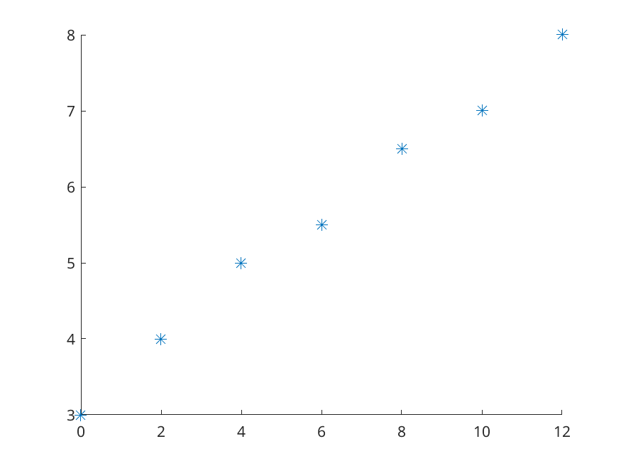
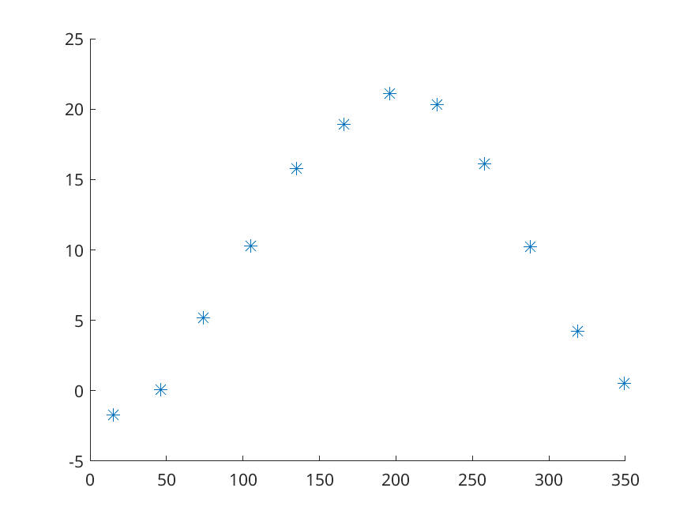
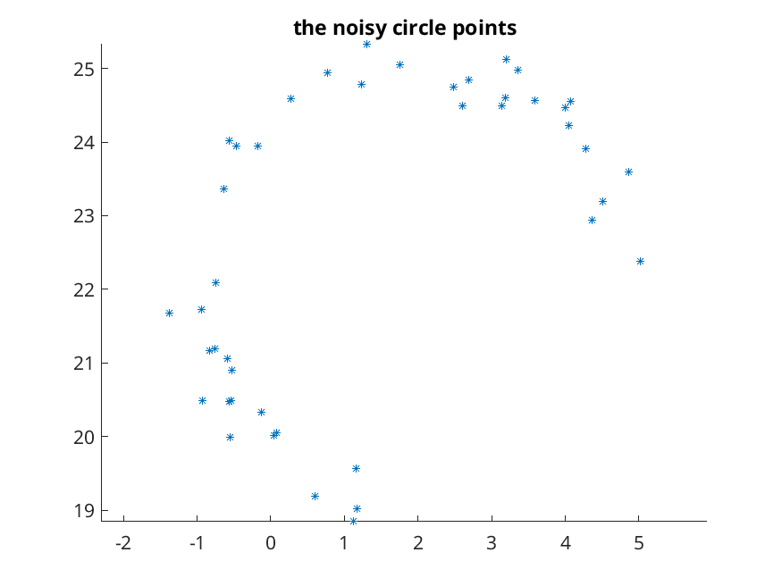
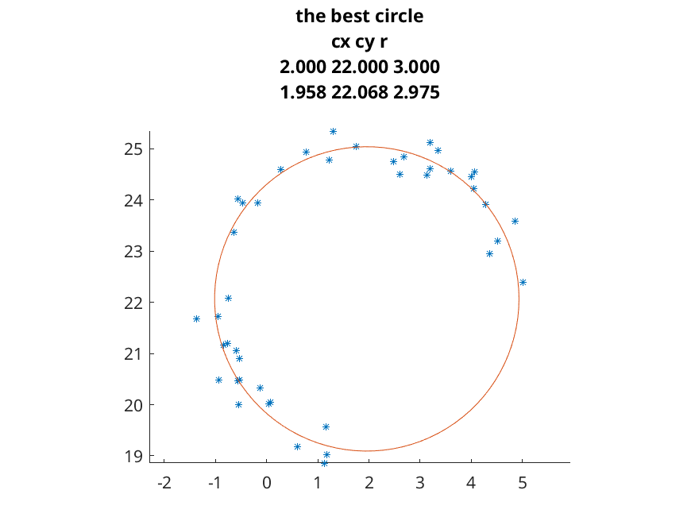

leastsquares/concepts
in nutshell
- Collect the data.
- Select the most appropriate model.
- Compute the best instance of the chosen model
- Use the model (predicting future values of the process)
example - watertank
A c_{y}lindrical, 0.5m height tank is being filled with water at a constant rate. Peter starts to observe the height of water (at t=0) in the tank. The measurements are summarized in the table below.
\begin{array}{c|r|r|r|r|r|r|r} t_i\ \texttt{min}\ &0 &2&4& 6& 8 &10& 12\\ \hline f_i\ \text{cm}\ &3 &4&5 &5.5 &6.5 &7 &8 \end{array}
The following questions arise:
- What is the height of the water in the tank at t=20?
- When will be the tank full?
- When was the tank empty?
Using the information in the observations we will try to answer these questions.

By examining the plot and understandig the circumstances we decided to use a first-order polynomial to model the data.
F(t) = x_1 t + x_2
The question is how to choose the parameters x_1, x_2 to get the best function - in some sense. For deciding about the parameters let’s consider the following function:
J(x_1,x_2)=\sum_{k=1}^{7} (x_1 t_k + x_2 - f_k)^2
For our data m=7 and we have to substitute the actual values data points: the result will be a second order polinomial with variables x_1,x_2. By this function the distance of the line x_1 t + x_2 and the data points t, f is measured. We need such x_1,x_2 parameters for which J is as small as possible. This kind of x_1,x_2 always exist. We will learn how to compute them.
Gauss normal equation
We m have data points t=(t_1,\ldots,t_m) and f=(f_1,\ldots,f_m). We are going to model the data with the help of the model function
F(t) = \sum_{k=1}^{n} x_{k}\varphi_{k}(t)
where \varphi_k\ \ k=1\ldots n’s are completely known one-variable functions. They are known as basis functions (or features in machine learning), but you can think of them informally as the building blocks of the model. F is an n variable function, it is the x_1,\ldots,x_n coefficient linear combination of the \varphi_k functions. It describes infinitely many possible functions at once. We are searching the best model instance, that is a coefficient system x_1,\ldots,x_n
J(x_1,\ldots,x_n)=\sum_{k=1}^{m} (f_k - F(t_k))^2
is as small as possible. How to determine the unknowns x_1,\ldots,x_n to get the smallest possible value/error for J? One can rewrite the conditions in linear algebraic terms. By setting
A=\left[\begin{array}{ccccc} \varphi_1(t_1) & \varphi_2(t_1) & \ldots & \varphi_{n-1}(t_1) & \varphi_n(t_{1})\\ \varphi_1(t_2) & \varphi_2(t_2) & \ldots & \varphi_{n-1}(t_2) & \varphi_n(t_{2})\\ \vdots & \vdots & \vdots & \vdots & \vdots\\ \varphi_1(t_{m-1}) & \varphi_2(t_{m-1}) & \ldots & \varphi_{n-1}(t_{m-1}) & \varphi_{n}(t_{m-1})\\ \varphi_1(t_m) & \varphi_2(t_m) & \ldots & \varphi_{n-1}(t_{m}) & \varphi_{n}(t_{m})\\ \end{array}\right]\ \ \\ x=\left[ \begin{array}{c} x_{1}\\ x_{2}\\ \vdots\\ x_{n-1}\\ x_{n}\\ \end{array} \right] \\ f=\left[ \begin{array}{c} f_{1}\\ f_{2}\\ \vdots\\ f_{m-1}\\ f_{m}\\ \end{array} \right]
the function J can be written in the form
J(x_1,\ldots,x_n)=\Vert f- Ax \Vert_{2}^2
and our problem is to find
\Vert f - Ax\Vert_{2}^2 \ \overset{x_1,\ldots,x_n}{\longrightarrow} \ \min
Note that A and f are numerical values and if the linear system Ax=f has a solution then we know the best model function instance - but in practice this system has no solution/inconsistent.
Gauss proved that finding minimizer for J is equivalent to solving the system
A^{T}Ax=A^{T}f
It is the gaussian normal equation - GN.
- it always has a solution
- it has a unique solution iff A (or equivalently A^{T}A) is a rank n matrix.
- if the columns of A form a dependent vector system then it has \infty many solutions. to resolve this one can get more data or simplify the model
- each of the possible solutions provide the same “best” value for J.
- if we have less observations than the number of unknowns (m<n)
- by solving the GN equation we say that we computed the best fitting model function
- Here you may find some words about the derivation.
special cases
- polynomial fitting
fitting a line
\begin{gather*} \varphi_{1}(t)=1\ \ \varphi_{2}(t)=t\\ \\ A=\left[ \begin{array}{cc} 1 & t_1\\ 1 & t_2\\ \vdots & \vdots\\ 1 & t_{m-1}\\ 1 & t_{m}\\ \end{array} \right]\\ \\ \text{the GN:}\ \ \left[ \begin{array}{cc} m & \sum t\\ \sum t & \sum t^2\\ \end{array} \right]= \left[ \begin{array}{c} \sum f\\ \sum tf\\ \end{array} \right] \end{gather*}
fitting a parabola
\begin{gather*} \varphi_{1}(t)=1\ \ \varphi_{2}(t)=t \ \ \varphi_{3}(t)=t^2\\ \\ A=\left[ \begin{array}{ccc} 1 & t_1 & t_1^2\\ 1 & t_2 & t_1^2\\ \vdots & \vdots & \vdots\\ 1 & t_{m-1} & t_{m-1}^2\\ 1 & t_{m} & t_{m}^2\\ \end{array} \right]\\ \\ \text{the GN:}\ \ \left[ \begin{array}{ccc} m & \sum t & \sum t^2\\ \sum t & \sum t^2 & \sum t^3\\ \sum t^2 & \sum t^3 & \sum t^4\\ \end{array} \right]= \left[ \begin{array}{c} \sum f\\ \sum tf\\ \sum t^2 f\\ \end{array} \right] \end{gather*}
matlab
- for polynomial fitting the
polyfit, polyvalfunctions are used. - the polynomials in matlab represented by a vector, the main coefficient is the first, the constant is the last element - the are represented by decreasing degree coefficients
- the form is classical/traditional (as there are other forms too) \begin{align*} \text{vector:}& \ \ [p_{n-1},\ldots,p_0]\\ \text{polynomial:}& \ \ p_{n-1}x^{n-1}+p_{n-2}x^{n-2}+\ldots+p_{1}x+p_0\\ \end{align*}
example - watertank - solution
example - acceleration
Peter is observing a body moving along a straight line with uniform (constant) acceleration. The object starts from the origin with zero initial velocity and moves along the x-axis. The collected data is the following:
\begin{array}{c|r|r|r|r|r|r|r} t_i\ \texttt{sec}\ &0 &2&4& 6& 8 &10& 12\\ \hline f_i\ \text{meter}\ &0 & 5.7700 & 18.0900 & 37.9600 & 69.0400 & 103.5000 & 156.8400\\ \end{array}
Based on the data
- where will be the object at t=13
- at what time does the object reach the position x=1000?
- what is the acceleration of the object?
example - mean temperatures
Given the data of monthly mean temperature values (Budapest, 1901-1950).
\begin{array}{c|r|r|r|r|r|r|r|r|r|r|r|r} t_i\ \texttt{sec}\ & 15 & 46 & 74 &105 & 135 & 166 & 196 & 227 & 258 & 288 & 319 & 349 \\ \hline f_i\ \text{meter}\ & -1.7 & 0.1 & 5.2 & 10.3 & 15.8 & 18.9 & 21.1 & 20.3 & 16.1 & 10.2 & 4.2 & 0.5 \end{array}
Search for the best fitting model of type:
F(t)=x_1 + x_2 \cos(2\pi\frac{t-14}{365})

application
- reconstruct a circle from its noisy points

Let’s imagine the given points as x,y column vectors. We are searching for the c_{x},c_{y},r realnumbers such that \Vert (x-c_{x})^2 + (y-c_{y})^2 - r^2 \Vert = (1)
is as small as possible (here the elementwise operations are applied where needed). By expanding the squares:
\begin{gather*} (1)=\Vert x^2 + c_{x}(-2x) + c_{x}^2 + y^2 + c_{y}(-2y) + c_{y}^2 - r^2 \Vert=\\ =\Vert x^2 + c_{x}(-2x) + c_{x}^2 + y^2 + c_{y}(-2y) + c_{y}^2 - r^2 \Vert=\\ =\Vert x^2+y^2 - \left[(r^2-c_{x}^2-c_{y}^2)+ c_{x}*2x + c_{y}*2y\right] \Vert=\\ =\Vert x^2+y^2 - (K + c_{x}*2x + c_{y}*2y) \Vert=\\ \Vert f - Ax \Vert \end{gather*} basically where are searching for the linear combination of the column vectors 1,2x,2y that is closest to the vector x^2+y^2. We learned that (for \Vert.\Vert_2!) this combination can be obtained by solving the Gauss normal-equation.
